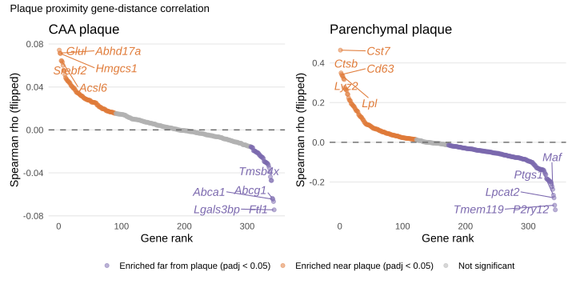

Gene-to-distance-to-plaque correlation — microglia only
Microglia object provided by Kai Saito with Akhil HALO annotations
Published
March 8, 2026
Gene-distance correlation functions
does a gene change systematically as the cell sits closer to (or farther from) a plaque?
Rationale
Cell-type composition: certain cell types cluster spatially near plaques, so their marker genes appear “enriched near plaque” even if no single cell changed its transcription.
By restricting the analysis to microglia only, we remove the composition confound. If a gene still correlates with distance within a single cell type, the association more likely reflects a genuine distance-dependent transcriptional programme rather than the fact that microglia are (or are not) concentrated near plaques.
# sample_ID and Treatment.Group are already in cell_distances_all (joined in load_slides_and_distances)cell_distances_all |>group_by(sample_ID, Treatment.Group, prox_any) |>summarise(n =n(), .groups ="drop") |>pivot_wider(names_from = prox_any, values_from = n, values_fill =0) |>mutate(total = proximal + distal) |>kbl(caption ="Microglia per sample — proximity to any plaque (50 um threshold)") |>kable_styling("striped", full_width =FALSE)
Microglia per sample — proximity to any plaque (50 um threshold)
sample_ID
Treatment.Group
distal
proximal
total
KK4_464
Adu
1364
2696
4060
KK4_465
IgG
1083
3124
4207
KK4_492
Adu
1859
2904
4763
KK4_496
IgG
1091
2538
3629
KK4_502
Adu
956
2349
3305
KK4_504
IgG
1031
2008
3039
Correlation function and plot
For each gene we compute a Spearman rank correlation (rho) between two vectors that share one entry per cell:
The cell’s raw transcript count for that gene.
The cell’s Euclidean distance (in um) to its nearest plaque of the specified type.
Spearman correlation operates on ranks rather than raw values, so it captures any monotonic relationship (not just linear) and is robust to the extreme zero-inflation typical of spatial transcriptomics count data. We set exact = FALSE because the large number of tied zeros makes an exact permutation p-value computationally infeasible.
A gene that is highly expressed near plaques (short distance) and lowly expressed far away (long distance) will have a negative rho (high expression co-occurs with low distance). Conversely, a gene expressed preferentially far from plaques will have a positive rho.
To make the results more intuitive,so that “plaque-enriched” genes appear at the top of a ranked list rather than the bottom, we multiply rho by -1 to obtain rho_flip. After flipping, positive values mean “enriched near plaques” and negative values mean “enriched far from plaques”.
We apply the Benjamini-Hochberg (BH) procedure to control the false discovery rate, producing an adjusted p-value (padj). A gene is called significant at padj < 0.05.
Final classification. Each gene is labelled as:
enriched_near — padj < 0.05 and rho_flip > 0 (upregulated close to plaques)
enriched_far — padj < 0.05 and rho_flip < 0 (upregulated far from plaques)
The microglia-specific gene-distance correlation, split by plaque type reveals that microglia activate fundamentally different transcriptional programmes near CAA vs parenchymal plaques.
Parenchymal plaque (right panel)
Near plaque (orange): Classic DAM (Disease-Associated Microglia) signature:
Cst7 (rho ~0.45) — the canonical DAM marker, cystatin F, involved in lysosomal processing
Ctsb, Cd63 — lysosomal/endosomal genes: microglia near parenchymal plaques are actively phagocytosing amyloid
Lyz2 — lysozyme, antimicrobial/inflammatory
Lpl — lipoprotein lipase, lipid metabolism rewiring in DAM
Far from plaque (purple): Homeostatic microglia signature:
P2ry12, Tmem119 — the two defining homeostatic microglia markers. Their strong negative rho confirms that microglia lose their resting identity as they approach parenchymal plaques.
Maf, Ptgs1, Lpcat2 — transcription factor and lipid metabolism genes associated with the surveilling/quiescent state
CAA plaque (left panel)
The effect sizes are much smaller (~0.08 vs ~0.45) and the gene signature is completely different.
Near CAA (orange): This is a lipid/cholesterol metabolism programme, not a phagocytic one. CAA sits in vessel walls, and microglia nearby appear to be responding to vascular lipid dysregulation rather than engulfing amyloid.
Glul — glutamine synthetase, typically an astrocyte gene but also involved in glutamate-glutamine cycling at the vasculature
Abhd17a — depalmitoylase, involved in protein trafficking
Srebf2, Hmgcs1 — cholesterol biosynthesis pathway (SREBP2 is the master regulator, HMGCS1 is its direct target)
Acsl6 — fatty acid activation
Far from CAA (purple):
Lgals3bp, Ftl1 — galectin-binding and ferritin (iron storage)
p_caa <-plot_gene_distance_correlation(cor_caa, title ="CAA plaque")p_paren <-plot_gene_distance_correlation(cor_paren, title ="Parenchymal plaque")(p_caa | p_paren) +plot_annotation( title ="Plaque proximity gene-distance correlation")+plot_layout(guides ="collect") &theme(legend.position ="bottom")

For each gene, Spearman’s rank correlation coefficient (ρ) was calculated between per-cell gene expression levels (raw count data) and the minimum distance to the nearest amyloid plaque. To facilitate interpretation, correlation coefficients were sign-inverted such that positive values indicate higher gene expression in cells located closer to plaques, whereas negative values indicate higher expression at increasing distances from plaques. Genes were ranked by the inverted correlation coefficient. Statistical significance was assessed using two-sided Spearman correlation tests followed by Benjamini–Hochberg false discovery rate correction. Genes were classified as plaque-enriched, plaque-distal, or not significant based on adjusted P values. The five most positive and five most negative correlations are labeled